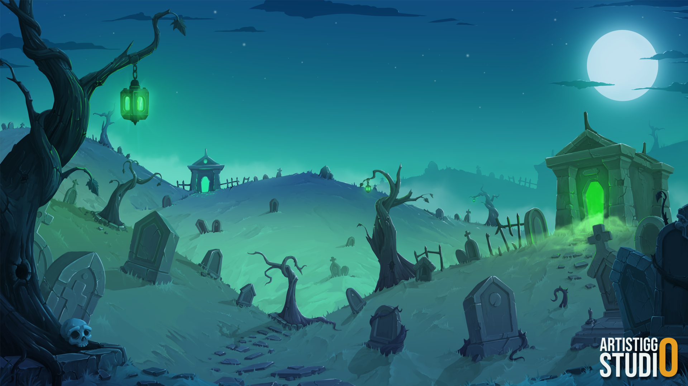
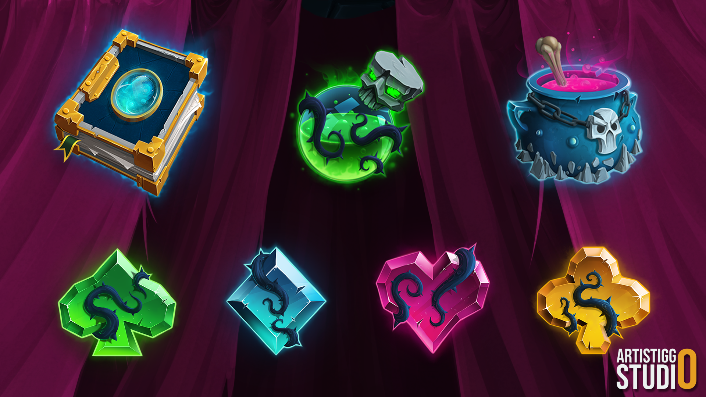
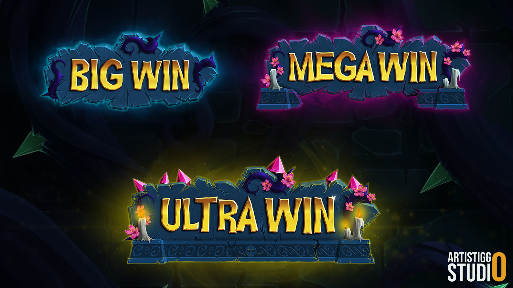
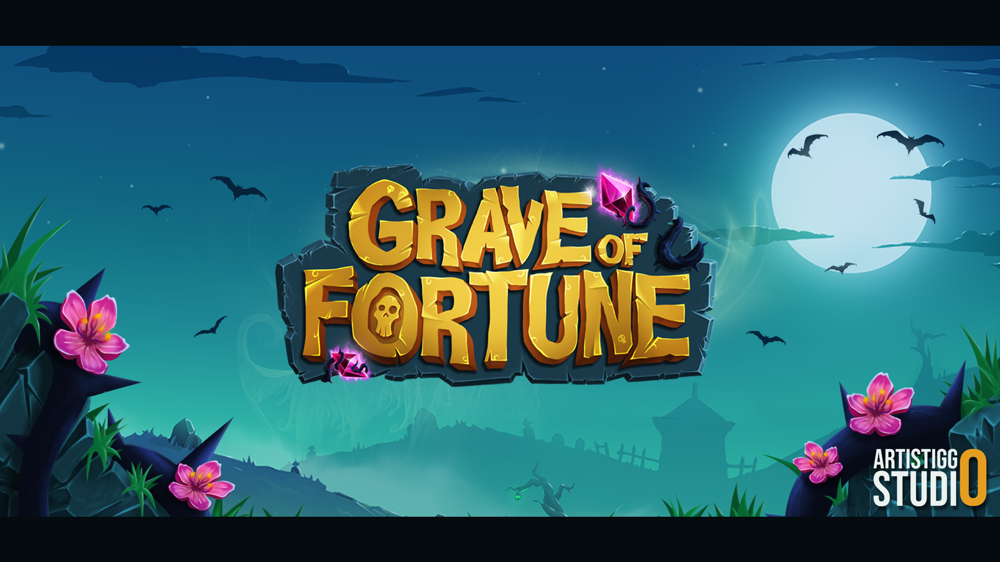

iGaming / Visual Development
Grave of Fortune
A fantasy-themed slot visual package spanning environment art, symbol design, logo, UI and win screens.





iGaming / Visual Development
A fantasy-themed slot visual package spanning environment art, symbol design, logo, UI and win screens.



